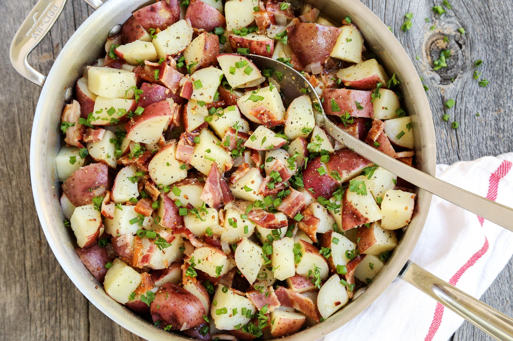

Mother Breaugh German Potato Salad

Add a little bacon to my potato salad please!
This potato salad is a classic Breaugh recipe
Ingredients
- Potatoes
- Bacon
- Water
- Vinegar
- Sugar
- Salt
- Pepper
- Flour
- Celery
- Onion
Steps
- Cut potatoes into approximately one inch cubes
- Cook and slice bacon until golden brown
- Boil potatoes on medium-high heat until tender
- In the pot of potatoes add two cups of water and one-half cup of vinegar
- Add one table spoon of sugar, salt, and pepper
- If the mixture is not thick enough add some flour to thicken
- Add celery, bacon, and slices of onion to garnish and finish if wanted